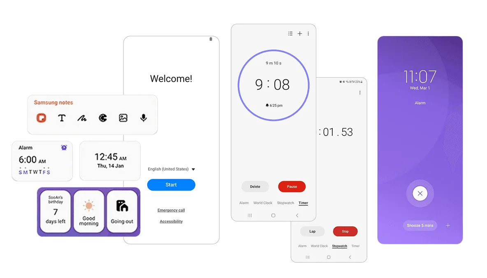
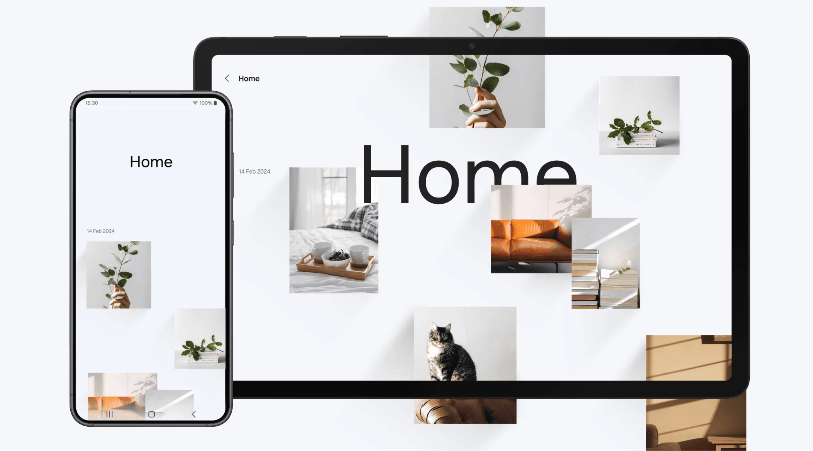
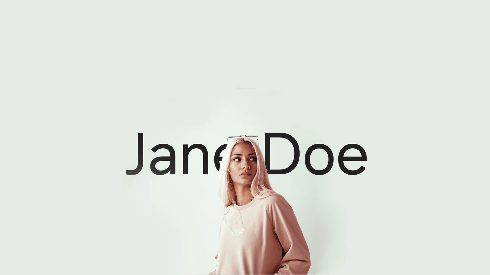
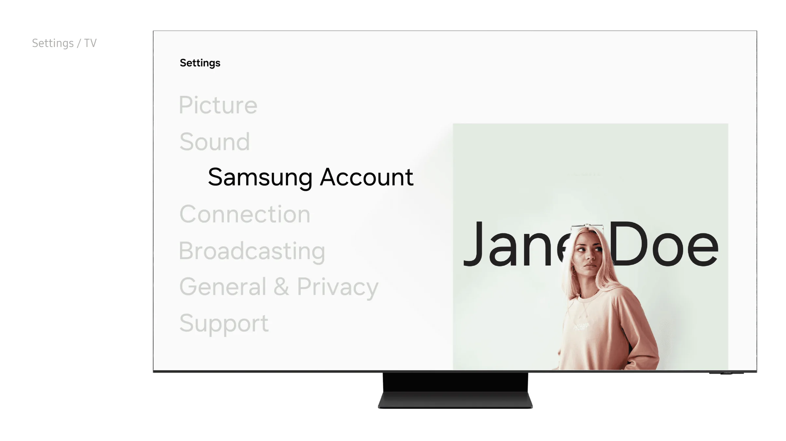
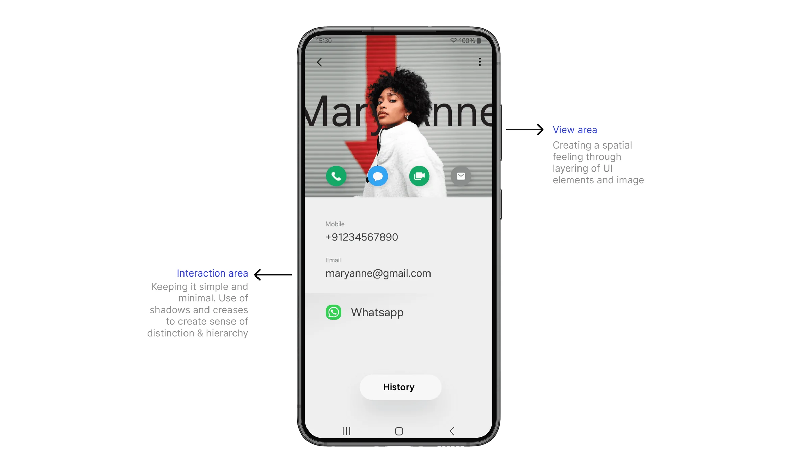

Future One UI Visual Design Exploration
A visual and experiential study exploring how Galaxy’s design language could evolve from practical and familiar to open, adaptive and emotionally resonant.
- Company
- Samsung Design Delhi
- Team
- 3 designers including project lead
- Timeline
- 3 months
- Status
- Exploration
Background

Galaxy devices are functionally exceptional. Yet among Gen Z users they lack emotional resonance: they feel practical rather than desirable. Apple and Nothing have built cohesive, intentional ecosystems that inspire loyalty, while One UI is seen as feature-rich but impersonal: overloaded, inconsistent and built around capability rather than emotional connection.
That gap between capability and desire became the core question. What if One UI weren’t designed as a functional system first, but as an emotionally intelligent experience? The project explores this not through incremental UI refinements, but by re-examining what Galaxy experiences should feel like.
The work was grounded in competitive analysis (iOS, Nothing OS and Pixel UI) and user perception studies, which pointed to four differentiators:
- 01Visual clarity
- 02Intentional restraint
- 03Cohesive design language
- 04Subtle personality
The conclusion was clear: Galaxy didn’t need more features. It needed a unified vision, one that felt less corporate, more human and genuinely resonant with the next generation.
Approach
I started by stepping back from the UI itself. The real problem wasn’t a lack of features; the system lacked a philosophy. Every component had been optimised in isolation, so the overall experience felt fragmented rather than intentional.
The inversion
What if we designed the feeling first, and let the interface follow?
That meant auditing the whole ecosystem, every app, widget, notification and system interaction, to find where coherence broke down. I found visual inconsistency, interactions that felt mechanical rather than fluid, and a general sense of overcomplexity.
From there I worked on simplification: removing non-critical elements and rethinking how the system could be lighter and simpler, towards one unified experience language that felt less corporate and more human.
The output was less about redesigning screens and more about setting a strategic direction: a reference framework to guide product work for years.




